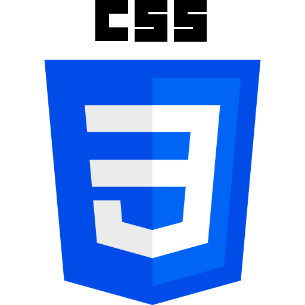

Sistema de sincronización Figma con Css.
Infraestructura de sincronización de tokens con arquitectura de persistencia híbrida (Local/Cloud) y protocolo MCP para agentes de IA.



Central de Sincronización
Visibilidad total sobre el estado de tus tokens de diseño.
Compara automáticamente las variables actuales con la fuente de verdad y genera el parche de sincronización.
La Entropía del Diseño
La fragmentación entre diseño y desarrollo. Un CRM de alta densidad con un Sistema de Diseño complejo genera miles de tokens (variables). La gestión manual provocaba discrepancias visuales graves entre las definiciones de Figma y el CSS final. El coste de mantenimiento era exponencial, generando deuda técnica y ralentizando los tiempos de entrega por la necesidad de una validación manual constante de estilos estáticos (*hardcoded*).
"Source of Truth" Unificada
Engineering Deep Dive
Construcción de TokenSync, un orquestador de diseño que implementa una estrategia de persistencia adaptativa y versionado atómico.

Ingestión de Datos
El sistema consume las Colecciones Primitivas y Variables Semánticas de Figma vía API.
Análisis de CSS (Parsing)
El desarrollador sube su archivo de estilos. El sistema procesa el código utilizando un Árbol de Sintaxis Abstracta (AST).
Motor de Comparación
Un algoritmo cruza los valores del CSS actual contra la definición "viva" en Figma.
Regeneración
Si se detectan anomalías, el sistema compila automáticamente un nuevo archivo CSS con los tokens corregidos.
class StorageFactory { static getAdapter() { if (process.env.NODE_ENV === 'production') { // Postgres Adapter para persistencia robusta en Vercel return new PostgresAdapter(process.env.POSTGRES_URL); } // FileSystem Adapter para desarrollo local rápido return new JSONFileAdapter('./data/local-db.json'); } } // Implementación de Rollback Atómico async function restoreVersion(versionId: string) { const db = StorageFactory.getAdapter(); const snapshot = await db.getSnapshot(versionId); await FileSystem.writeCSS(snapshot.tokens); // Reversión física del archivo }
MCP & Agentic Logic
AI-Ready Interface
TokenSync expone sus endpoints bajo el estándar MCP (Model Context Protocol). Esto permite que agentes externos (como Claude) consulten el estado de los tokens, analicen Diffs o ejecuten sincronizaciones sin interfaz gráfica.
Smart Versioning
Cada sincronización genera un Snapshot inmutable. El sistema permite Rollbacks instantáneos a cualquier punto de la historia, actuando como una "máquina del tiempo" para el sistema de diseño.
Experiencia de Desarrollo (DX)
La interfaz (React + Vite) está diseñada para la Seguridad Psicológica del ingeniero.
Pre-flight Checks
Un visualizador de Diffs muestra exactamente qué líneas de CSS/Tailwind van a cambiar antes de tocar el disco.
DropZone UI
Carga de archivos CSS y JSON mediante arrastrar y soltar, con validación de esquema en el cliente.
Audit Logs
Visualización cronológica de cambios, permitiendo identificar quién y cuándo se modificó un token específico.
Métricas Operativas
100% de uptime en Vercel gracias a la migración a Postgres, eliminando errores de escritura en disco.
Cero pérdida de datos gracias al versionado secuencial.
Salida agnóstica compatible con Tailwind CSS y CSS estándar.

Deja de validar con diapositivas.
Tienes la visión. Te falta la ejecución técnica. Saltémonos la burocracia de las agencias y hablemos directamente de cómo llevar tu idea a producción.
DISPONIBILIDAD
Q2 2026: 2 Plazas abiertas
Base en Barcelona | Remote Native